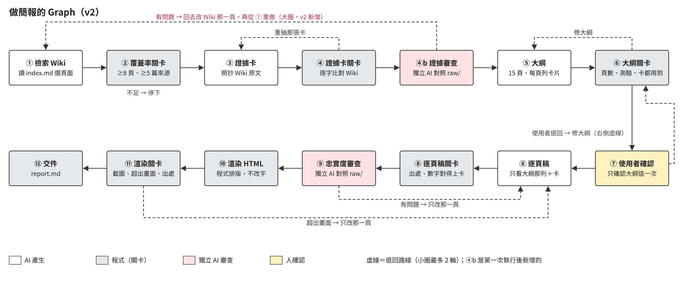

教學簡報：垃圾分類入門
15 頁，給完全不熟的大學生。按 → 鍵或點畫面右側換頁，手機可以左右滑。每一條內容後面的小數字是出處，點下去會打開 Wiki 的來源頁。
開始看簡報 →Wiki（49 頁，直接在這個網站上看）
Wiki 目錄概念 19、爭議 3、常見誤解 9、來源 18
範例：總覽垃圾大致分成四類
範例：爭議頁蛋殼算不算廚餘
Wiki 操作紀錄每次讀入資料、檢查、修正
AGENTS.mdWiki 的規則
獨立 AI 審查 Wiki對照原始資料找出 26 個問題
建 Wiki 之前：先討論、後生成
做簡報的流程（Graph）
- 檢索 Wiki → 覆蓋率關卡（程式）
- 證據卡 → 證據卡關卡（程式）→ 證據審查（獨立 AI）
- 大綱 → 大綱關卡（程式）→ 使用者確認
- 逐頁稿 → 逐頁稿關卡（程式）→ 忠實度審查（獨立 AI）
- 渲染 HTML（程式）→ 渲染關卡（程式）→ 交件

流程定義每一關做什麼、v1 → v2 修改紀錄
執行紀錄每一關的時間、結果、問題清單
交件報告每一關跑了幾次、沒過幾次
大綱我確認過的 15 頁大綱
忠實度審查第 1 輪16 個問題
忠實度審查第 2 輪2 個問題
TAICA「生成式 AI：文字與圖像生成的原理與實務」第十週作業。資料是第七週整理的 18 篇公開資料摘要，實際規定以所在地清潔隊公告為準。 原始碼與每一步的 commit：GitHub